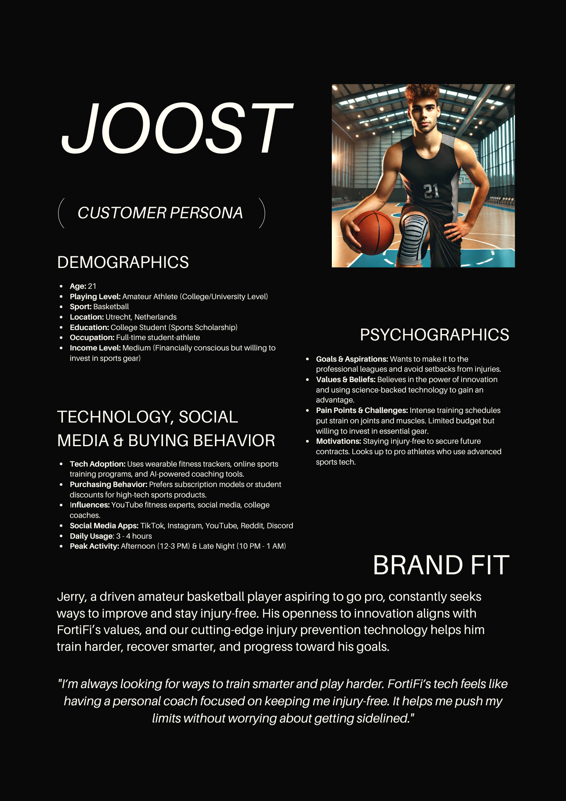

General Information
This branded website is publicly available at FortiFi, with the files being available on our GitHub.
This website was created by:
- Tudor Costea (ID: 231127)
- Nick Boender (ID: 235556)
- Bozhidar Dimitrov (ID: 230154)
- Mary-Jean Acevedo (ID: 221162)
Content
Please clarify here the match between students and pieces of content. Make sure that you provide a link to the correct page within the website
| # | Student ID | Value | Name and link of content |
|---|---|---|---|
| 1. | Tudor Costea (ID: 231127) | Production, Management, Content | Performance for Life |
| 2. | Nick Boender (ID: 235556) | Production, Management, Content | Unbreakable Resilience |
| 3. | Bozhidar Dimitrov (ID: 230154) | Management, Content | Potential for Greatness |
| 4. | Mary-Jean Acevedo (ID: 221162) | Management, Content | Control Your Path |
Customer Persona: (images created by ChatGPT)
For the Content we created 3 different Personas (which you can also check in this Canva Document), but we then dedcided to use only the 2nd one for Marketing, in order to target a more focus audience.
Brand Name Explanation:
Fortifi comes from the word fortify, meaning to strengthen, protect, and prepare for challenges. Thus, the brand seeks to fortify athletes with tools that will help them with performance, resilience, and long-term health. It is short and punchy and hence a very good name for a company focusing on the high-performance sporting world.
Logo Justification:
Seemingly captured in dynamic motion and energy, the logo portrays an athletic style amidst a whirlwind of action. Sharp angular lines depict speed, power, and forward motion-the whole idea of pushing limits. A clear, futuristic typeface reinforces trust, innovation, and endurance, foundations of Fortifi's identity-while the confident teal color evokes a sense of trustworthiness, innovation, and endurance: all foundational pillars for Fortifi. The logo and name both visually and verbally strengthen the brand's core promise, performance, thus recreating the environment in which our products would thrive.
Main Logo:
Production
Design Elements
The list of all the design elements alongside their justifications:
-
A colour scheme:
- #FFFFFF "Clarity & Cleanliness" White represents safety, cleanliness, and professionalism. It’s the perfect backdrop to make information feel trustworthy and easy to read, crucial for a health-focused site.
- #56918B "Health & Balance" This calming greenish-blue tone suggests wellness, stability, and recovery. It brings in a clinical yet approachable vibe, making users feel like they’re in good hands.
- #E8872C "Energy & Action" Orange evokes movement, motivation, and performance. It grabs attention for calls-to-action while staying warm and positive.
- #773AFD "Strength & Focus" Purple can symbolize discipline, focus, and elite performance, which are all important in sports. It also gives a modern, high-tech edge that aligns with performance tracking, coaching, or injury prevention tech.
- #000000 "Authority, Precision & Boldness" Black conveys seriousness and professionalism. It adds contrast, makes content easier to read, and communicates that your site is credible and focused, exactly what users want when seeking guidance on injury prevention.
- Font choices:
- Racing Mark Race:
Because the font communicates motion, speed, and intensity, especially athletic, it works well for sports-centered website headlines. This typeface reinforces competition, performance, power, and with such strong energetic presence it captures attention easily, therefore is suitable for injury prevention titles or branding. - Quicksand:
Due to being modern and rounded sans-serif, this font communicates a friendly feel while also being clean and easy to read, therefore suitable for body text and other informative content. Racing Mark Race’s the warmth of this tone offsets the font’s boldness, making users comfortable while participating in important health and safety information. - User interface patterns:
- Hero Section: It consists of the logo, name and slogan with the intention of capturing the visitor's attention and introducing our brand. Shows an image with 4 people running with our logo above them, encapsulating our identity and making people understand what our website is about from the beginning.
- Display Cards: Their purpose is to display multiple elements of information at one time, which were used two times on the “Home“ page (below the “Why Us”, and the “Reviews”) and once on the “About Us” page, at the “Meet the Team” section.
- Image Carousel: Used on the “Home” page at the section where we displayed our products, with the purpose of showing two different visual perspectives of our product.
- Purchase Options (Size Selecter, “Add to Cart” Button, Cart Icon in Navigation Bar and Checkout Table) : Its purpose is to replicate a real retail website that you could buy something from, with a realistic process until the “Place Order” button.
- (Intentional) Endless Spinner: This is activated when pressing the “Place Order” to replicate a loading screen, replacing the payment step of the process, which were we wanted to stop with the reproduction of a real website.
- Footer with Links to social media: At the end of every page (excluding the “Corporate”) you can find a “Footer” that includes links to both our Social Media platforms (Instagram and TikTok) to further influence the customer to create bond with the brand.
- Fake Contact Us Form: As stated earlier, one of our purposes was to recreate a real website, which is why we added this page.
- Two-Column Information Display: Its purpose is to display two types of similar information at one time, with the purpose of saving space and increasing the visual appeal of the website through having a well put together structure.
- Text Carousel: This was used while showcasing our four “Values”, as part of the “About Us” page, which has the purpose of putting the spotlight on one value at a time, for full focus from the consumer.
- Navigation Bar: Carefully crafted to include every element that was needed to navigate the site, including the previously mentioned “Cart” icon. It also has the “fixed-top” function to be visible at all times while browsing the website.
- The structure of the navigation and content of our website differs from the “Home”, “Checkout”, “Contact” and “About Us” page (with a total of 4 pages excluding the “Corporate”), with each one of them having different layouts and purposes. The following paragraphs will further explain our visual vision:
- Home: The homepage of FortiFi employs remarkable visual hierarchy to express the brand’s core value which is: Performance for Life. The hero section is bold and takes advantage of a striking athletic visual, and a logo placed right at eye level. This adheres to UX guidelines about first impression impact and clarity. In this case, it is unambiguously clear what FortiFi does. They support athletes with high-performance gear that is built to last. Featuring the two flagship products on the homepage takes advantage of minimalistic design principles and straightforward design, thus lowering cognitive load (Hick’s Law) while reinforcing the brand focus on a clearly defined high-quality offering. Placing testimonials just below provides heartfelt social proof, which is important in any UX design and helps bridge trust to FortiFi’s promise of empowering all levels of athletes, from beginner to pro, with innovation they can trust.
- Contact: The contact page has been designed with reassurance in mind, reflecting FortiFi’s approach to care, not just performance. From UX’s view, it eliminates the maze of user interaction, whether it’s with a contact form, email, or support option, where users feel heard and supported. This is in line with the brand’s philosophy of staying in touch with the athlete beyond the sale, adding to the customer journey’s emotional side. The contact page is also designed to highlight FortiFi’s functional, streamlined intuitive layout, which helps fast-moving users get frictionless solutions.
- About Us: The About page crafts a narrative to create emotional connections, which is a core principle of user experience design. It does not bombard users with figures or industry jargon, but rather tells them a story about how FortiFi performs, shows resilience, and innovates. From a UX perspective, the layout prioritizes scannability and visual connection, and the trust is earned by revealing the brand’s “why.” This strategy reveals the company’s mission which is to enable athletes to keep performing while taking care of their bodies, positioning the company not just as a provider of solutions, but a partner in sustained performance.
- How does the website design fit the values and personality of the brand?
- How does the website design fit the marketing and communication strategy?
- How does the website design help showcase the unique value proposal of the product?
FortiFi's website exemplifies the brand's values of performance, durability, and innovation in their clean, dynamic layouts and confident visual presence. The bold hero image, sharp typography, and minimal color palette impart the unmistakable sense of strength and clarity characteristic of FortiFi’s relentless pursuit of helping athletes perform at their peak for the long haul. Each page is devoid of clutter, concentrating instead on effortless navigation and swift information retrieval, similar to the brand’s products. The tone of design is energetic yet professional, reflecting the brand’s dual identity: serious about performance, but with a human touch. This interceding clarity with bold assertiveness guarantees the website does not merely inform, but rather encapsulates the essence of the FortiFi brand.
The marketing and communication strategy of FortiFi is all about trust, education, and results. The design of the website helps in this regard quite well, as it brings benefits right to the front center stage, immediate social proof through testimonials and intuitive navigation to help users get what they need as quickly and easily as possible. Strong visibilities by real athletes and functional design elements reinforce messaging about science-backed gear for real performance. The site ties in with the brand's channel strategy as it makes available for social sharing, high-impact content available for use while providing a clear way from inspiration to purchase to convert users through storytelling and usability.
Currently, its uniqueness is all about bringing science into the high-performance injury support gear for use over the long-term and brought to life on the website by means of smart design. Through focusing on the two main products with descriptions, highlighting features such as support, flexibility and breathability, then matching them with real-world testimonials, the site crystal clear the purpose and edge of the products. In fact, the strategic placement of reviews and feature callouts reinforces that FortiFi is not just about recovery; it is about optimizing longevity in movement. Fast and slow scans are enabled by this layout on both levels for the curiosity seekers and serious athletes regarding what makes FortiFi different and why it matters.
Credits
Credits for third-party element:
- HTML templates if these are different from this one (buas-media-interactive/prj4-group-template)
- The source code for UX patterns other than the ones provided by the “Bootstrap” library (see getbootstrap.com/docs for a list of such patterns)
- Images & Custom Code (HTML, CSS, Bootstrap & Javascript): ChatGPT.
Testing Report
Please write about…
- Your testing goals:
- Our user test was majorly designed to assess the efficiency and clarity of our website user experience (UX) and interface design (UI) as well as identifying any usability issues that may hinder the user engagement and conversion. We wanted to know how intuitively the navigation guided the respondents and how well the product pages conveyed value in the process and, how smooth was the buying journey? Also, was it easy for the users to find the key information like price, product detail, or review and whether the overall design really went well with FortiFi's brand image were the things meriting an observation.
- Your testing methods(participants ,setting & protocol):
- Participants: The jury did tests with 4 participants which partially represent the target demographics of the brand. They were indeed all in the ideal age range and further all were staying within the boundaries of the Netherlands, which is aligned with the primary geographic audience of FortiFi. Equally relevant is the fact that all the subjects were of fairly moderate to advanced experience in browsing sites and online shopping and thus eminently capable of offering insightful UX/UI feedback. It should be noted that not all of them belonged to the athlete niche, but their familiarity with digital interfaces had enabled them to critically evaluate design, structure, and flow from a user-centered perspective.
- Setting: All user testing was carried out face-to-face, providing direct observation and in-depth live feedback. Three were carried out in a familiar environment; the other two were realized in the typical settins users would likely visit FortiFi's site: around campus. Tests were performed on laptops-the most representative device type for product browsing and purchase-in mainly hybrid conditions, thus allowing taking into account and counting security measures around different contexts within which users might possibly interact with our design-real-life scenarios.
- Protocol: Introducing FortiFi and the site is just brief for participants who don't know about it because they were not part of past research interviews. They need to explore freely and feedback as raw as it gets about what they deemed intuitive, confusing, or even off-brand visually. Tasks were slightly different among sessions according to stages of the website's development, that proved to be very useful. Early participants were mainly testing basic navigation and product discovery, while the later sessions' participants were usually more active in product selection, cart activity, and info tabs. While all tests maintained specific focus on usability and clarity of the product offering and usablilty of completing a purchase-related task, Feedback was mostly gathered in real time via observation and discussion since most usability issues became readily apparent through user interaction. We noted their comments and reactions in as informal a manner as possible so as to enable the identification of pain points and go back into the development process with concise and actionable changes. This feedback cycle of iterations really made up for many design choices and helped mold it further for later users.
- Your testing results: User Testing Videos Folder
- Positive and negative aspects of the UI/UX that have been identified, ranked by importance:
- Easy to Navigate: Unassisted, all participants completed their tasks, which suggests that the layout, menu and overall navigation of the website are quite intuitive. This is critical for user-retaining and converting purposes, especially for the product-driven website like FortiFi.
- Glitches/Bugs with Product Purchasing: The site was predominantly functional, though a few minor bugs, especially related to the shopping cart and navigation, disrupted the user flow. These friction points could either directly affect user trust or hit the bottom line in terms of losing sales - thus putting this as a priority area for enhancement. Although the site is functional, some issues-it bugs, primarily the shopping cart and navigation, break the user flow. The disruption can have a direct effect in either trust or sales and is therefore considered a priority for enhancement.
- Clear Product Focus: The very first landing page and product sections portray a clear picture of FortiFi's offerings. The testers appreciated the strong visual and textual points-of-view on knee and elbow braces, which allowed them to quickly gather an understanding of the product's purposes and value.
- Visually Appealing: The finished portions of the site hero image, buttons, and product cards were marked clean and pleasing to the eye. The visual identity is aligned with FortiFi's brand-energy, boldness, and empowerment, especially in its use of whitespace and rigid layout.
- Unfinished or Overwhelming Content Blocks: The long or dummy text, especially within the value section, impaired readability for testers who found it burdensome and offered suggestions for stricter conciseness or collapsible sections to ease the flow. Although this is not a deal-breaker, it diminishes considerable polish and professionalism.
- Images or Elements Not Loading: Hitch up such ones as the logo disappearing on mobile devices and absent product visuals. While they were fixed at a very fast pace, such bugs hinder user trust with the brand at the moment or make it less credible to users.
- Improvements that have been implemented on the final website:
- Fixed cart update and interaction bugs
- Corrected image and logo loading errors
- Improved mobile responsiveness
- Revised navigation structure
- Adjusted text length and placement
- Improvements that would be implemented in a hypothetical future:
- Make long text sections collapsible
- Add search functionality
- Add hover states and microinteractions
- Improve accessibility features
- Introduce user reviews or testimonials dynamically
- Expand product options or customizations
- Integrate analytics to track user behavior
- Add a sticky navigation bar
Marketing
Context of campaign and promotional activities:
The goal of the campaign was to increase brand awareness, interact with our target group, and direct traffic to our site before launching our AI-brace. We targeted athletes interested in both peak performance and sustained health.
Fortifi is a sports technology company utilizing artificial intelligence for injury prevention, performance improvement, and empowering athletes. Our Ai brace is based on real-time biomechanical data, identifying imbalances and movement mistakes, allowing athletes to perform at their best - safely and with confidence.
For our Fortifi campaign, we carried out a series of activities for promoting awareness, educating our target audience, as well as building up excitement for Fortifi's launch. We created and shared a mix of inspiring video content, tips for avoiding injuries, as well as educational carousels on Instagram as well as TikTok. We engaged our people by responding through interactive polls within Instagram Stories.
Everything was optimized for driving traffic through our landing page, where the value proposition of the product, including athlete endorsement, was highlighted, as well as for developing trust and curiosity.
To be consistent, we followed a 4-week content plan, posting 3-4 times a week on both Instagram and TikTok. We tried out posting times initially so that, from then on, we could post efficiently when our Target audience were most likely to see them.
We tracked each week by key metrics including reach, engagement, and interactions. By doing so, we determined what did work and optimized our content by focusing on format as well as the types of content that most drew out our audience.
Reasoning for Channels/Platforms used in the Communication and Media Plan - Media Tactics
Why Instagram?
- Large User Base: As of April 2024, Instagram had approximately 8.82 million users in the Netherlands, accounting for 50.4% of the population. The largest user group was individuals aged 25 to 34, comprising 2.4 million users. (Instagram Users in Netherlands - April 2024, 2024)
- Visual & Informative: Features like Reels, Stories, and Carousels allow for clear demonstrations of your AI-powered knee brace, showcasing its functionality and benefits effectively.
- Community Engagement: The platform enables direct interaction through comments, direct messages, and interactive stickers (such as polls, Q&A, and quizzes), creating a sense of community and building brand trust.
Why TikTok?
- Growing Popularity: As of January 2024, TikTok had over six million users in the Netherlands, with a significant portion aged 20 to 24 years—a key demographic for sports and fitness products. (Statista, 2024)
- Potential: TikTok’s algorithm prioritizes content discovery, making it easier for new brands to go viral and reach audiences beyond their immediate followers.
- Short-Form Video Appeal: The platform excels at delivering quick, engaging content, ideal for product demonstrations, athlete testimonials, and injury prevention tips related to our knee brace.
Overall Benefits:
- Video-First Content: Both platforms support video-centric content, which is ideal for explaining how the AI knee brace works and demonstrating its real-world benefits.
- Influencer Collaborations: Partnering with influencers on these platforms can drive trust and credibility among potential customers.
- Targeted Advertising: Both Instagram and TikTok offer paid advertising options that allow for precise targeting of athletes, fitness enthusiasts, and individuals prone to knee injuries.
- By using Instagram and TikTok, you can effectively increase brand awareness, educate potential customers, and drive conversions through engaging, shareable content tailored to the Dutch market.
Learning Points
What did you learn during the duration of the project concerning the campaign?
Firstly, and most importantly, we learned how difficult it is to execute a whole marketing campaign not on one but on two platforms. Finding the time to shoot the content was also difficult, considering everyone in our team was in a different department. Nevertheless, we still managed to make the most of the time we had. Staying consistent with the posts was also challenging, which is something we can learn from. In the beginning, we were posting up to 4 times a week, which went down to 2 as the final week approached because of other deadlines. Nevertheless, we learnt that having people to rely on is crucial, especially when half of the team had very limited experience with marketing before this project.
What worked and what didn’t?
It's crucial to first take into account the platforms we focused on during the project, namely Instagram and TikTok, in order to appropriately answer. Our content strategy revolved around these two channels, and a lot of what we discovered is directly related to the way our audience responded to our postings on these social media.
We began our campaign with Instagram and TikTok since our insights showed us that our target audience mainly uses those two platforms. Interestingly enough, Instagram was an instant success for our campaign with us managing to achieve most of our campaign goals within the 2-week mark. Consequently, we had to keep increasing the campaign goals so our progress wouldn’t stagnate. People enjoyed the video content we were posting and interacted with it. However, when it came to TikTok, we did not have as much success, which was unexpected since we knew the algorithm of TikTok helped a lot when it comes to new accounts. We only managed to get a small portion of the following we were expecting to accumulate. We did receive some views but still not enough.
When it comes to content, we saw that real video content with people/athletes was way more attractive and engaging than normal carousels and motivational photos. Our interview insights confirmed that in theory as well as in practice video content is preferred over any other type of content. Moreover, inspirational and motivational videos also did great. They led the most natural (non-following) traffic to our page. However, when we posted those same videos on TikTok, they did not perform as well, even though they still did better than any of the other posts we made.
What went as expected and what didn’t?
As we already mentioned, our interview insights showed us that our target audience prefers real-life videos of people/athletes over anything else. That was confirmed in our Instagram campaign very clearly. However, we did not expect less success on TikTok. We were hopeful that the algorithm would push our videos to the For You pages of our target audience, which was not the case. Moreover, even though informational content was not one of the main types of content our target audience mentioned when asked about their preference, they still expressed interest in it when asked. Looking at our insights in both social media we can clearly see that it underperformed heavily, which was not expected. This leads us to think that the interviewees might have said they were interested in some other form of informational content – not carousels.
What would we do differently?
We would focus more on video content than anything else because the numbers on both social media show a positive correlation between this type of content and impressions/reach. Moreover, we would try to create less AI content as it did not perform as well as our own content. Even though it did help in times when we did not have time to work, we would like to reduce the number of AI posts. Moreover, we would also try to post more video-based informational content rather than carousels or basic posts to try and see if it would make a difference. Furthermore, we think that it would have been better to put more focus on TikTok since, after the Instagram boom, we mainly focused on it because we thought it would be way harder to grow an Instagram page than a TikTok one. As a matter of fact, it was not.
Future Planning
In the past month, we have learnt a lot as a brand and as a marketing team. If we had more time, we would definitely focus more on video content of people/athletes who are somehow associated with our brand, since those videos performed best out of any other type of content we posted. They created the most engagement for our page and gathered the most impressions. In the future, we would think about investing in sponsorships from well-known professional athletes if we could amass a sizable enough fan base and obtain the necessary funding. Our insights from recent interviews confirmed that people are much more likely to believe and engage with content or purchase products when they are promoted by a familiar and respected sportsman/sportswoman
In addition to athlete-focused content, another format that has proven successful is motivational edits. These types of videos, which combine inspiring visuals with powerful messaging, have also driven strong engagement and positive sentiment from our community and reached a larger audience outside of our following than the real video content of people.
Moreover, our informational content did not produce nearly as much impact as the rest of our content, which leads us to the conclusion that we should reduce the amount of informational content. However, we understand that this type of content might not be that engaging, but it is vital for people who are actually interested in purchasing our product, which was also mentioned in our interviews. If we were to continue our campaign, we would most definitely reduce the amount of informational content, but not get rid of it completely. Instead of posting informational content once a 1-2 times per week, we would do 1-2 times per two weeks.
Finally, if we had more time, we would try to expand our content to new platforms such as YouTube. Our research and user feedback have indicated a growing interest in more in-depth, long-form content, even if our present efforts have mostly concentrated on short-form content for platforms like Instagram and TikTok. YouTube will allow us to create deeper bonds with our followers since we will focus on comprehensive stories, provide behind-the-scenes insights, and share valuable content such as training routines, athlete interviews, product breakdowns, and motivational documentaries.
Professionalism
Instagram Posts:


Instagram Stories:


TikTok Posts:


Management
Lean Canvas
We have a total of 3 Lean Canvases, which you can find in the folder linked at Appendix #1. It contains the first draft, which was created based on assumptions regarding our brand, the second draft which was created based on the Problem Interviews (linked at Appendix #2), and the third and final one which was created based on the Solution interviews (linked at Appendix #2). The follwing image shows the final version of our Lean Canvas.

Problem
- Athletes Overtrain Without Realizing It
- Many athletes unintentionally push past their limits, leading to strain or long-term injuries.
- Existing alternatives: Coaches, intuition, or basic rest schedules — but none give real-time, personalized warnings before injury occurs.
- Lack of Real-Time Feedback on Form and Movement
- Bad form, especially during high-impact sports like volleyball or sailing, causes repetitive stress injuries (knees, fingers, shoulders).
- Existing alternatives: Occasional coaching feedback or video reviews — but these are not immediate and miss subtle biomechanical errors.
- Injury Prevention Tools Are Generic or Passive
- Most current methods (braces, taping, warming up) treat symptoms or support joints, not prevent injuries with smart insights.
- Existing alternatives: Standard knee braces, warm-ups, and rest — but no active tools that predict and intervene before injury happens.
Solution
- AI-Powered Smart Brace
- Detects fatigue, poor form, and injury risks using real-time biomechanical data.
- Sends alerts to the athlete and/or coach to prevent injury before it happens.
- Personalized Training Insights
- Provides tailored suggestions based on strain, body movement, and performance metrics.
- Helps optimize workouts while reducing long-term strain.
- Educational & Motivational Support
- Delivers injury prevention tips and personalized recommendations via short videos and expert content.
- Builds trust and confidence in using the product, fostering safer and smarter training habits.
- Community & Feedback Loop
- Users can contribute anonymized training data to improve AI predictions.
- Option to join a community of athletes for shared experiences, tips, and support.
Customer segments
Target Customers and Users: Our primary target customers are athletes between the ages of 18 and 35, especially those involved in team sports (e.g., football, volleyball, basketball) and who train multiple times a week. This includes:
- Semi-professional and amateur athletes
- Weekend warriors and fitness enthusiasts
- Athletes recovering from past injuries or prone to physical strain
- Coaches and trainers who want to optimize player health and performance
Characteristics of the Ideal Customer (Early Adopter / Brand Persona):
They are quite tech curious and performance-driven athletes whose major focus is injury prevention plus training with an edge. They would even use wearables and AI-based tech; if it can be trusted, made easy to use, and delivers real benefits, then they will consider it. These users prioritize comfort, security, and smart recovery, often biassed by endorsements from athletes alongside scientific backing for whatever they may assess.
They mostly consume content on Instagram and TikTok, with a preference for short-form video content, testimonials, and training advice. They're prone to lean towards recommendations made by peers, what their communities say about the products they're interested in, and experiences from trialing a product previously before buying it. These people also seek performance gains, a long-term healthy lifestyle, and keeping active throughout the year in their sport.
Unique value proposition
Fortifi is the only AI-powered brace predicted to prevent injury before it happens based on real-time data tracking, fatigue and strain alarms, and movement correction packed into one sleek, comfortable device. Unlike conventional braces or standard fitness wearables, Fortifi provides personalized information to every athlete and learns with each session, enabling athletes to push their limits with confidence and peace of mind.
Unfair advantage
Fortifi’s sustainable competitive advantage lies in the following key aspects that cannot be easily replicated:
- Proprietary AI Technology & Data Models:
- First-Mover Advantage in AI Bracing:
- Strong Community Trust Through Athlete-Driven Design:
- High Barrier to Entry Due to Technical & Sports Expertise:
Fortifi is using the latest AI trained on real time biomechanical data from many athletes, which allows it to present hyper-personalized injury prevention insights. And the model keeps improving over time as it learns more and more data making it so hard to compete with the technological advancement that Fortifi will enjoy for years to come.
For the first time in the niche of modern hybrid products, Fortifi has combined wearable bracing with AI-powered predictive injury prevention, against the typical industry tendency of merely general fitness tracking or static braces.
Fortifi was co-created and tested with real athletes, making it more genuine and relatable to the sports community, centered on tasks in performance and feedback from athletes. Early adopters therefore act like true brand advocates to cement Fortifi's credibility and brand loyalty further.
A unique constellation of expertise precludes market entry by relatively new competitors whereby medical-grade biomechanics, real-time feedback, AI software, and wearable hardware are integrated seamlessly.
Channels
- Social Media (Instagram & TikTok):
- Landing Page & Website:
- Influencer & Athlete Collaborations:
To engage its younger athlete base, the brand uses Instagram and TikTok short videos, athlete testimonials, training tips, and motivational content. The nature of these platforms allows high engagement and organic growth with the help of reels, stories, polls, and viral trends.
The website remains the main source for product information, athlete stories, pre-orders, and email collection. All traffic related to our social campaigns and promotions is directed here to inform, convert and nurture relationships.
With a view to spreading authentically into new communities, collaboration with semiprofessional and professional athletes is carried out. These athletes become trusted voices who share real use cases and drive credibility for Fortifi.
Key Metrics
To measure the effectiveness of our brand experience and campaign performance, Fortifi tracks the following key metrics:
- Website Traffic & Landing Page Conversions
- Number of unique visitors to the website and landing page
- Conversion rate (email sign-ups, waitlist registrations, early interest submissions)
- Social Media Performance
- Follower growth on Instagram and TikTok
- Engagement rate (likes, comments, shares, saves)
- Reach and impressions of individual posts and videos
- Video completion rate (especially on product demos or athlete testimonials)
- Community Engagement
- Participation in interactive content (polls, Q&As, DMs)
- Click-through rate from social media to the website)
- Number of shares and mentions by users and influencers
- Email Marketing Metrics
- Open rate and click-through rate of email campaigns
- Growth of email subscriber list
- Unsubscribe rate (for feedback on communication effectiveness)
- Product Feedback & Testing Participation
- Number of users opting into product testing or feedback sessions
- Responses to product surveys (satisfaction score, feature usefulness)
Revenue Streams
- Direct Product Sales (One-Time Purchases)
- Fortifi Knee Brace – €199.99
- Fortifi Elbow Brace – €149.99
- Advertising Revenue (Future Potential)
- Display ads for sports recovery products, supplements, and wellness tech
- Sponsored content or athlete partnerships
Our primary revenue comes from selling our AI-powered wearables:
These products are available via our official website and select sports retailers. Customers make a one-time purchase for the brace, which is designed for long-term use with no ongoing fees.
As Fortifi grows, we plan to monetize traffic to our digital platforms (website, blog, app) through:
These products are available via our official website and select sports retailers. Customers make a one-time purchase for the brace, which is designed for long-term use with no ongoing fees.
Cost Structure
Fixed Costs (Annual) - These are the expenses necessary to run the brand and keep our marketing and web presence consistent:
- Website domain + hosting (Webflow + DNS) - €300
- AI R&D + software maintenance (yearly license & updates) - €5,000
- Marketing campaign tools (Later, Canva Pro, analytics tools) - €750
- Content production (photography/editing tools) - €1,500
- Marketing team (2 part-time marketers) - €22,200
- Product development (initial engineering + prototyping) - €10,000
- Total Fixed Costs: €39,750
Variable Costs (Per Unit) - These are production-related costs that scale based on the number of units sold:
- FortiFi Knee Brace - €40(Manufacturing)+ €10(Packaging & Shipping)+ €30(AI Sensor Integration)= €80(Total Per Unit)
- FortiFi Knee Brace - €30(Manufacturing)+ €10(Packaging & Shipping)+ €25(AI Sensor Integration)= €65(Total Per Unit)
Sales Assumption & Cost per Unit (Example Projection) with predicted yearly sales of:
- 250 Knee Braces
- 150 Elbow Braces
- Total Units = 400
Total Variable Cost: (250 × €80) + (150 × €65) = €20,000 + €9,750 = €29,750
Total Cost (Fixed + Variable): €39,750 + €29,750 = €69,500
Average Cost per Unit: €69,500 ÷ 400 = €173.75 per unit
Services/products
FortiFi offers a line of intelligent, AI-powered sports braces designed to help athletes prevent injuries, optimize performance, and train with confidence. Currently, our product line includes:
- FortiFi Knee Brace – €199.99
- Real-time feedback via integrated AI sensors
- Fatigue and motion pattern monitoring
- Compression zones for joint stabilization
- Lightweight, breathable materials for comfort
- FortiFi Elbow Brace – €149.99
- Targeted tendon support
- AI-guided tracking of strain and overuse
- Flexible fit without sacrificing movement
- Empowerment through innovation
- Safety without compromise
- Professional-grade gear for all levels
Engineered for high-impact sports, this brace provides:
Ideal for team sport athletes prone to knee strain.
Tailored for upper-body strain, especially for sports like volleyball or basketball:
How it Fits the Brand Identity - FortiFi’s product line directly contributes to our Unique Value Proposition:
"Train smarter. Play harder. Stay injury-free with FortiFi’s AI-powered precision bracing."
Our products are more than physical supports—they are smart injury prevention tools built for athletes who demand peak performance without risking their health. The technology-first, athlete-centered, and performance-driven design is aligned with our brand values:
Whether you’re a semi-pro striker or a weekend warrior, FortiFi helps you stay in the game longer—confidently and safely.
Validation of Assumptions
Making injury prevention come true and optimizing performance is a direct reflection of our brand's mission. The name was chosen because it is contemporary and has a great and powerful twist to what fortify means to strengthen and protect. It is short, has very memorable action-oriented tone and fits as a name for a brand that sells top-notch sports technology. As it matured into the concept, different names came up such as Striide, InjuryShield, and KneeGuard Pro, but they were either way too generic, way too constricting, or did not carry the emotional and professional resonance that we sought. In the balance of innovation and trust, FortiFi shined. Our logo-an athlete stylized in motion-uses strong angles and bold typography that conveys let alone strength and precision but speed. Combined with our carefully chosen color palette, the design invokes a sense of health, safety, and cutting technology. Compared to the rehabilitation logos that DonJoy or Mueller use to represent their companies, FortiFi stands for a more proactive AI-driven approach toward prevention and elite performance. Supported by customer interviews and testing feedback, this strong and distinct identity informed that our name, logo, and brand image had many-of our target audience.
Appendix
Please use the list below to provide links to evidence for all parts of your justication. Please double-check all links before delivering the website. Do not hesitate to refer to these numbers above.